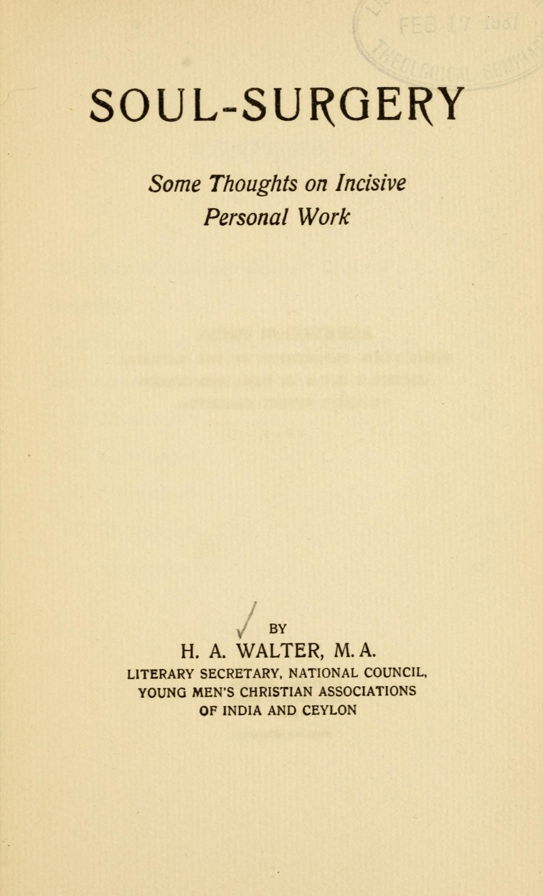
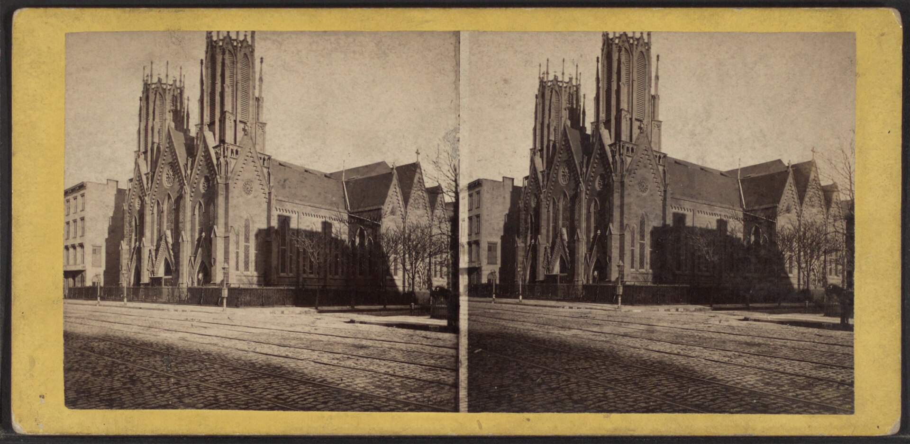
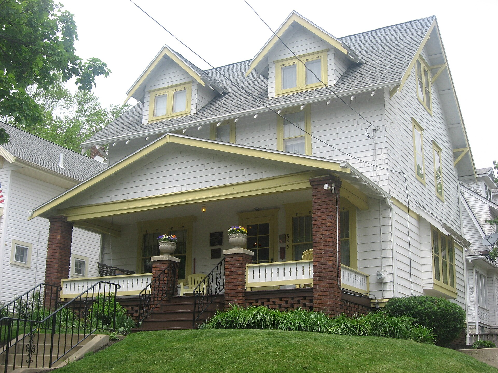
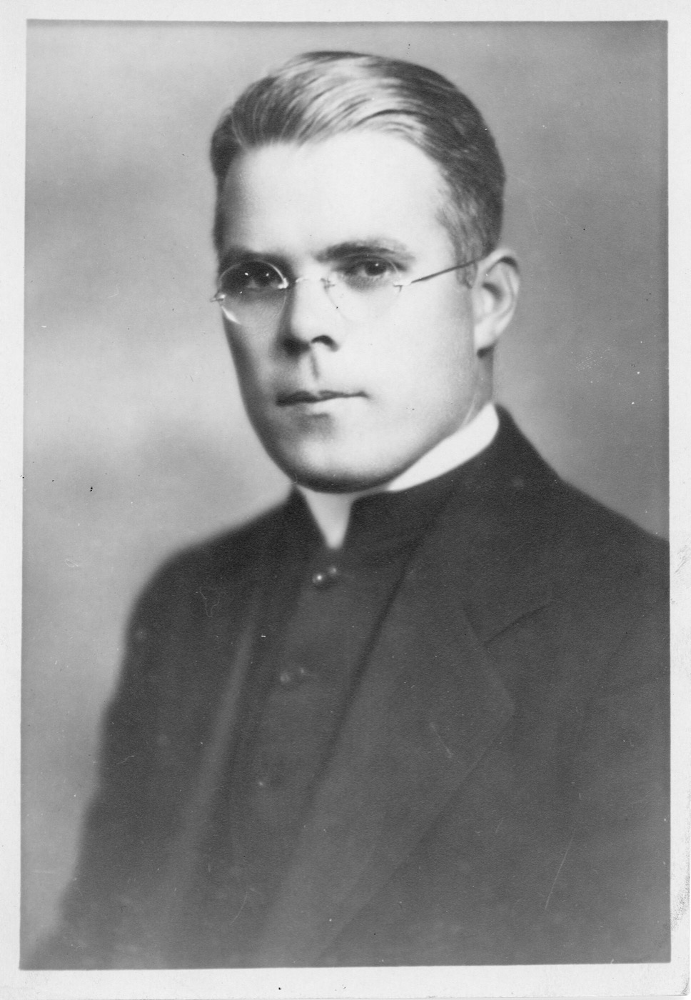
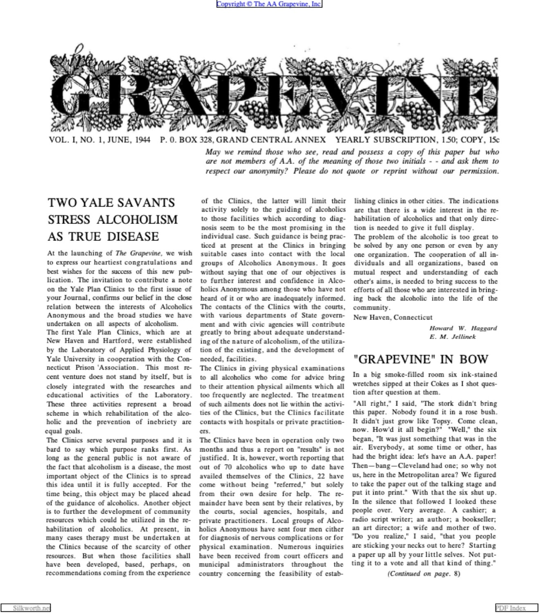
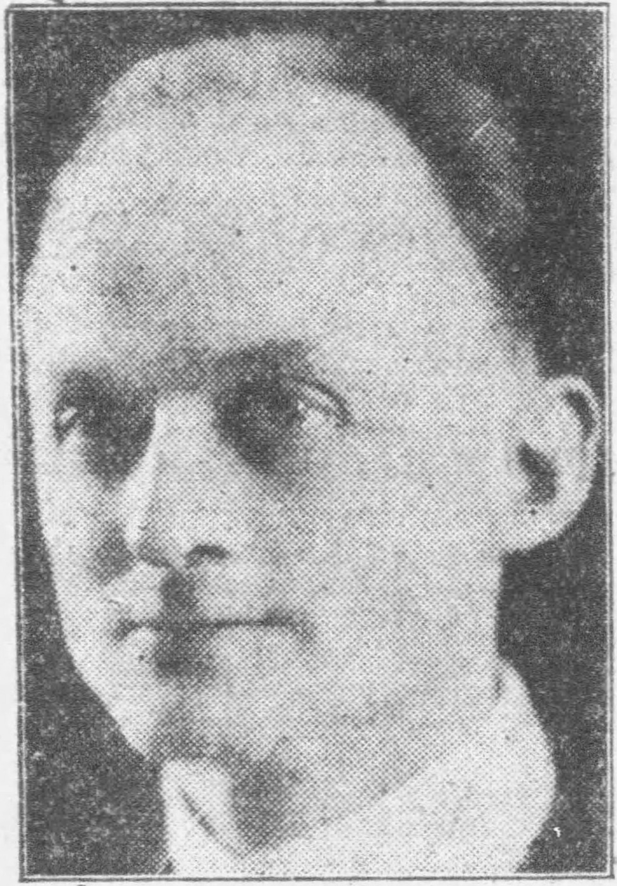
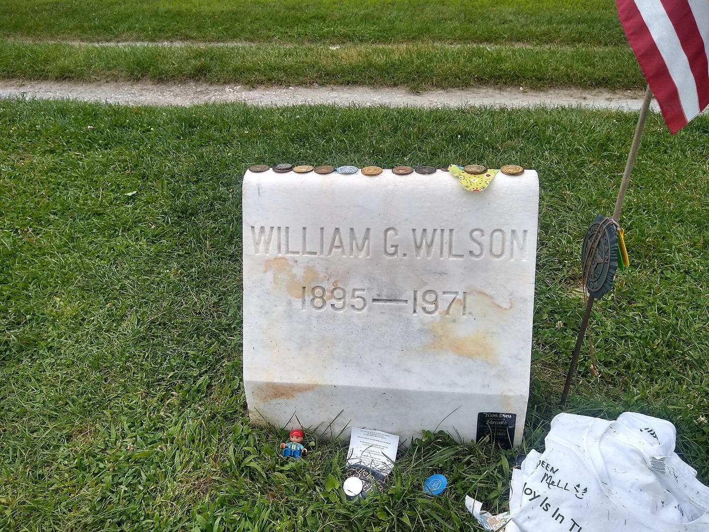
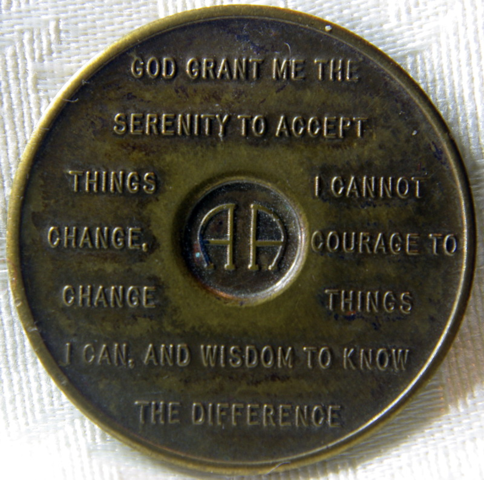

Before the book
The program had six steps, and they were never in print
For the first four years, there was no book. There were no twelve steps. If you got sober in 1936, you did it on a program that existed only in people's mouths, and it had six points, not twelve.
This is the thing hardest to feel from inside a tradition that now treats a fixed text as the program. In Akron and New York from 1935 to 1939, the work was something you were walked through by another drunk, not something you read. The closest thing to a manual was a borrowed one: the Oxford Group's personal-work handbook, which is where the hand-on-shoulder, one-drunk-helps-another machinery came from in the first place.

Soul-Surgery title page, 1919. Princeton copy via Internet Archive, public domain.
The early Akron version ran roughly like this: you admitted you were licked, you got honest with God and with another person, you made your amends, and you carried it to the next drunk. Different old-timers counted it as six steps, or five, or seven, because nobody had frozen it yet. One Chicago founder remembered Dr. Bob taking him through the entire program in a single sitting of three or four hours. the six steps
The yardstick was not the Steps. It was the Oxford Group's Four Absolutes, honesty, purity, unselfishness, love. The reading was the Sermon on the Mount, the Book of James (some early members wanted to name the whole thing the James Club), the thirteenth chapter of First Corinthians, Emmet Fox, and a daily devotional. the Akron way The newcomer was usually put in a hospital bed first, for the better part of a week, and only then taken upstairs to surrender on his knees.
The program you carry as twelve printed steps was first carried as a half-dozen spoken ones, and as something you did, not something you owned.
Which raises the obvious question. When the spoken thing finally got written down, who wrote it, and how?
The myth
The Steps were not written in thirty minutes
You have heard the origin story, probably from a podium. Bill Wilson, sick and discouraged in the front bedroom at 182 Clinton Street late in 1938, takes up a yellow pad, asks for help, and writes the Steps in a single rush. When he is done and counts them, there are twelve, the number of the apostles. A complete program, delivered whole.
Brooklyn facades, 65 to 71 Columbia Heights. Berenice Abbott, Changing New York, 1936, NYPL, public domain.
.jpg){kind=link}
The night with the pad seems to have really happened. The legend is what gets bolted onto it. When the historian William Schaberg went through the surviving drafts and letters for his 2019 book Writing the Big Book, the clean lightning-bolt story fell apart. Schaberg revises the legend
The reality was a fight. Bill expanded an existing word-of-mouth program (those six-ish points) into twelve on purpose, splitting steps apart to close what he saw as loopholes a slippery drunk could crawl through. Then the New York group argued over the result line by line, and the drafts went back and forth to Akron by mail. The wording you have memorized was litigated for weeks, not received in an evening. The tidy "twelve like the apostles" detail is a meaning laid on afterward, not the reason there are twelve.
The most quoted spiritual program of the twentieth century was a committee edit under deadline, not a thing delivered intact from above.
That does not make it smaller. It makes it human. And the most human part is who was in the argument, because one of them did not believe in God at all.
The truce
An atheist edited God into the background
The single most important design choice in the book, the thing that lets a hard atheist and a devout believer kneel in the same room, was won by the atheist. Over the objections of the devout.
His name was Jim Burwell, the salesman whose story in the book is the one about the long, bitter road to belief. He was, by his own cheerful account, the group's resident unbeliever, and he dug in hard against the religious language in the drafts. He later said the New York group held what amounted to a prayer meeting about him, the hope being that he would either leave town or get drunk and solve the problem himself. Burwell

Calvary Church, Gramercy Park. Robert N. Dennis Collection, New York Public Library, public domain.
{kind=link}
What he won instead of exile was the softening you can recite without thinking: the higher power left to your own definition, the qualifier that follows the word God, the lower-case "him" you can read as anything you like. The compromise phrases are not vague by accident. They are a peace treaty, negotiated word by word between a believer and a skeptic, and the skeptic's edits are why the door is wide enough for both.
It cut the other way too. A minister's son in the group, whose story is the southern one, pushed for more God, not less, and some of his pressure held. So the finished text is a settlement with marks from both sides still on it. the God language
The open door that makes the program work for the faithless was installed by a faithless man, against the wishes of the faithful.
The forgotten man
The co-author they wrote out of the story
The official telling is Bill's book. The archives say it was, for a crucial stretch, two men's book, and the fellowship spent decades quietly forgetting the second one.
His name was Hank Parkhurst, the first man Bill sobered up in New York, an ex-Standard Oil executive with the salesmanship Bill lacked. The book was physically assembled out of Hank's little office across the river in Newark. He ran the business end, set up the publishing company, and dreamed up the stock scheme that financed the printing by selling shares to members. He pushed hard for the pragmatic, less overtly religious tone, the same direction Burwell was pulling. And the non-alcoholic secretary in that office, Ruth Hock, typed every draft of the manuscript and fielded the early flood of mail. Schaberg

Dr. Bob's House, 855 Ardmore Avenue, Akron. Photo by Nyttend, public domain, via Wikimedia Commons.
{kind=link}
Then Hank drank again in 1939, and the partnership ended badly. He fell out with Bill, sold his share of the publishing company for two hundred dollars, and spent years bitter about it. The movement's authorized histories, written later, shrank him to a cautionary footnote. It took Schaberg's archival work to put the near-co-author back into the room where the book was built. Parkhurst long minimized
The book exists, in the shape it has, partly because of a man the fellowship spent fifty years leaving out of the story.
The title
It almost had a different name, and it almost died
The title everyone now treats as inevitable was a near miss. For a long stretch the front-runner was The Way Out. Someone, the story goes, checked the Library of Congress and found more than a dozen books already published under that title and only a handful called Alcoholics Anonymous, so they took the safer, emptier name. the title The name that became the fellowship's was chosen because the better one was crowded.
The nickname is humbler still. To make a thin manuscript feel like four dollars and a half of book, they printed the first run on the thickest, cheapest paper in the shop. That is the entire reason it is called the Big Book.
It nearly died in the crib more than once: the mailing that drew almost nothing, the eviction, the tailor who lent a thousand dollars against his own shop to keep it alive, the garish red-and-yellow dust jacket that old-timers came to call the circus cover. The most recognizable recovery text in the world spent its first year looking like a bad bet. the lean year
The most famous title in recovery was a fallback, printed on cheap paper, and nearly went under in its first twelve months.
The second book
The Twelve and Twelve was written in the dark
Read the 1939 book and the 1953 one back to back, as you have, and you can hear that the second voice is older, sadder, more interior. There is a reason. The Twelve Steps and Twelve Traditions was written by Bill Wilson largely alone, in the middle of an eleven-year clinical depression that began almost the moment the fellowship was safe.
From roughly 1944 to 1955, the co-founder of the most famous recovery movement on Earth could often barely get off the couch. The chastened, psychological tone you value in the Twelve and Twelve, the long looks at pride and fear and emotional sobriety, is the sound of a sober man writing his way through despair. Bill W.

Father Edward Dowling, S.J.. Courtesy Maryville University Archives, released CC0, via Wikimedia Commons.
{kind=link}
He had help of a particular kind. Father Ed Dowling, a Jesuit from St. Louis, had climbed the stairs to the 24th Street clubhouse one rainy night in 1940 and told Bill that the Twelve Steps lined up almost exactly with the centuries-old Spiritual Exercises of Saint Ignatius. He became Bill's spiritual sponsor and heard his fifth step. Dowling The book's deeper, more Catholic-feeling interior owes a real debt to a priest most members have never heard of.
Even the lightest thing in it has a wound under it. Rule 62, do not take yourself too seriously, comes from a real humiliation: an ambitious member's grand plan for a combined clubhouse, hospital, and education center that collapsed and embarrassed everyone. The joke is a scar with a number on it.
The book you quote for its humility was written by a man who could hardly stand up, with a priest's hand on his shoulder.
Paid in wreckage
The Traditions are scar tissue
Members tend to receive the Twelve Traditions the way they receive the Steps, as principles handed down. They are nothing of the kind. Every one of them is a lesson the fellowship paid for in a specific disaster, and Bill wrote them by reading through thousands of letters about groups tearing themselves apart.

The Grapevine, Vol. I No. 1, June 1944. Scan via silkworth.net; the issue's copyright was not renewed.
The anonymity traditions, the ones near the end about principles before personalities, are scar tissue from people putting their full names and faces to the program in the press and then, sometimes, drinking again and taking the reputation down with them. The traditions about money and property come from clubhouse fights and the bone-deep fear of repeating the Washingtonians, the great reformed-drunkard movement of the 1840s that pulled in hundreds of thousands and then vanished inside a decade once it got into politics and money. the Traditions
They first ran in the Grapevine in April 1946 as a workmanlike article titled "Twelve Points to Assure Our Future," and were formally adopted at the 1950 convention in Cleveland, the last time Dr. Bob spoke. Bill's whole case was that the fellowship had to bind its own hands before success and ego killed it the way they had killed every movement like it before.
The Traditions are not commandments. They are a list of the exact ways the thing almost died, written down so it would not die that way again.
The prayer
The prayer arrived by accident, from outside
The lines you say at the end of a thousand meetings are not AA's, and the fellowship has never pretended otherwise. The Serenity Prayer wandered in from the outside world, by chance, and AA simply kept it.
The accepted account is that around 1941 someone in the New York office spotted the prayer in a newspaper, in the obituary section by one telling, and brought it in. Ruth Hock, the same secretary who typed the Big Book, had it printed on cards, and it spread through the fellowship from there. Nobody composed it for AA. It was adopted, not authored. how it arrived

Reinhold Niebuhr, 1927. Public domain, via Wikimedia Commons.
{kind=link}
Who wrote it has been argued for almost a hundred years. The usual answer is the theologian Reinhold Niebuhr, in the 1930s or early 1940s. Then in 2008 the Yale researcher Fred Shapiro turned up several earlier versions in print and in private papers and suggested Niebuhr might not be the author after all. The challenge made news. Years later, after more evidence surfaced, Shapiro partly reversed himself and credited Niebuhr after all. Shapiro contested for decades
The most-spoken lines in the program arrived secondhand, from a newspaper, by an author the world spent a century arguing about.
The storytellers
What happened to the people in the back of the book
You have read the personal stories in the back more times than you can count, in the voices of people you half feel you know. The first edition carried twenty-eight of them. Here is the part the stories never tell you: a lot of those voices did not make it.
By the best reconstruction, only about half of the first-edition authors stayed continuously sober. The rest relapsed, some came back, and some were lost for good. The book has always been more durable than the people who filled it. the authors counts vary
The hardest cases are the ones closest to the center. Ebby Thacher, the old friend who carried the message to Bill in the first place, the man without whom there is no AA, drank on and off for the next thirty years, lived for long stretches on Bill's money, and only got a steady footing near the very end. He died sober in 1966, about two years dry. Ebby
Bill Dotson, AA number three, the man in the bed, did the opposite: he walked out of Akron City Hospital in 1935 and never drank again, and dictated his story for the second edition shortly before he died in 1954. Ernie Galbraith, number four, whose first-edition story is literally about a seven-month slip, relapsed for decades and married Dr. Bob's teenage daughter against the family's wishes.

A founder's gravestone, East Dorset, Vermont by Whoisjohngalt, CC BY-SA 4.0, via Wikimedia Commons.
{kind=link}
And then there is Florence Rankin. Hers was the only woman's story in the first edition, the lone female voice in the entire 1939 book. She relapsed not long after, moved to Washington, and died around 1943, almost certainly by her own hand. It fell to the southern-story member, by then a friend, to identify her body. Florence Rankin date uncertain Her chapter title, about a victory, sits in the book to this day.
The voices you trust most in the back of the book belonged to people who were still losing. The book outlived them.
The close
It was made by hand, and it held
Put it all in one place. The program you treat as fixed was six steps before it was twelve. The Steps were a committee edit, not a lightning bolt. The open door for the unbeliever was cut by an unbeliever. The book was half-built by a man it later forgot, named by default, printed on cheap paper, and nearly died in its first year. The prayer was borrowed. The second book was written from inside a depression. The Traditions are a list of old wounds. And a good number of the people whose stories you trust did not stay sober.
None of that is an exposé. It is just the truth of how the thing got made, and for a lot of people it makes the books more trustworthy, not less. A program that admits it was assembled by fallible, relapsing, arguing human beings is a program that is honest about exactly the material it claims to work on.

Sobriety medallion by Yolanda, CC BY 2.0, via Wikimedia Commons.
.jpg){kind=link}
The fellowship clearly feels the weight of all this, because it has chosen to freeze the first 164 pages. The wording has barely moved in more than eighty years, and when a plain-language version finally arrived in 2024, it was published as a separate book rather than a change to the original. The freeze is not an accident of neglect. It is relic-keeping, a decision to leave the made thing exactly as the makers left it.
If you ever want the proof that it was once a draft, it exists. The marked-up printer's manuscript of the Big Book, the one with the edits and second thoughts still in the margins, sold at auction in 2018 for 2.4 million dollars. the manuscript Somewhere in those margins, someone crossed a word out and wrote a better one. That is the whole story. It was made by hand, and it held.
The fine print
Sources, and what I was careful about
This piece is about the making of the AA literature, not its contents, and it deliberately quotes none of the Steps, the Traditions, the Promises, or the prayer. The archival spine is William Schaberg's Writing the Big Book (2019), set against the official histories (Pass It On, Dr. Bob and the Good Oldtimers, AA Comes of Age) and Ernest Kurtz's Not-God. Several points here are genuinely debated, and they are flagged in the text: how much of the Steps' drafting was a single night versus weeks of edits; how large Hank Parkhurst's role really was; the year and manner of Florence Rankin's death; and the long fight over who wrote the Serenity Prayer. Where the official story and the archival record disagree, both are noted.
The full list, twenty-six sources, grouped by section
The archival backbone
- Schaberg WH (2019). Writing the Big Book: The Creation of A.A. The ledger-level reconstruction behind most of the corrections here. aaagora.org revises the official story
- Kurtz E (1979). Not-God: A History of Alcoholics Anonymous. The standard scholarly history. Hazelden. hazelden.org
- Alcoholics Anonymous (1957). Alcoholics Anonymous Comes of Age. Bill Wilson's own account of writing the book and the Traditions. aa.org
- Alcoholics Anonymous (1980). Dr. Bob and the Good Oldtimers. The Akron side, the early stories, the storytellers. aa.org
The six steps and the early program
- A.A. Cleveland. Origin of the Twelve Steps and the earlier word-of-mouth program. aacle.org
- Chesnut GF (hindsfoot.org). The Akron way: the Four Absolutes, the reading list, hospitalization and surrender. hindsfoot.org
- Oxford Group; Soul-Surgery (H. Walter, 1919). The personal-work manual behind the twelfth-step method. archive.org
The Steps, the God language, and Hank
- The Big Book (Alcoholics Anonymous). The 1939 first edition: drafting, the God-language compromises, the thick-paper nickname, the title. Wikipedia. wikipedia.org
- Jim Burwell ("The Vicious Cycle"). The atheist's memoirs and the fight over the religious language. silkworth.net
- Henry "Hank" Parkhurst. The near-co-author, Works Publishing, the Newark office, the break with Bill. Wikipedia. wikipedia.org long minimized
- Alcoholics Anonymous (1984). Pass It On. The authorized biography: the writing, Ruth Hock, the lean year, the depression. aa.org
The title and the lean year
- History of Alcoholics Anonymous. The title fight, the failed mailing, the near-eviction, the circus jacket. Wikipedia. wikipedia.org
- Bill W. (Wilson). The 24th Street office, the financing, the manuscript. Wikipedia. wikipedia.org
The Twelve and Twelve, and Dowling
- Twelve Steps and Twelve Traditions (1953). Bill Wilson as sole author; the chastened voice; Rule 62. Wikipedia. wikipedia.org
- Bill Wilson's depression. The eleven dark years inside sobriety, 1944 to 1955. Wikipedia. wikipedia.org
- Edward Dowling, S.J. The Jesuit who saw the Ignatian parallel and became Bill's spiritual sponsor. Wikipedia. wikipedia.org
The Traditions
- Twelve Traditions. "Twelve Points to Assure Our Future," Grapevine, April 1946; adopted Cleveland, 1950. Wikipedia. wikipedia.org
- Washingtonian movement. The 1840s reformed-drunkard movement whose collapse the Traditions were built to avoid. Wikipedia. wikipedia.org
- The A.A. Grapevine (June 1944). The first issue; the magazine where the Traditions debuted. silkworth.net
The Serenity Prayer
- Alcoholics Anonymous (SMF-129). How the Serenity Prayer entered AA, around 1941. aa.org
- Serenity Prayer; Shapiro F (2008, rev.). The Niebuhr attribution, the Yale challenge, and the partial reversal. Wikipedia. wikipedia.org contested
The storytellers, and the manuscript
- silkworth.net; AAHistoryLovers (N. Olson). Biographies and fates of the first-edition story authors. silkworth.net counts vary
- Ebby Thacher; Mel B. (1998), Ebby. The man who carried the message, and his decades of relapse. Wikipedia. wikipedia.org
- Bill Dotson; Ernie Galbraith. AA numbers three and four, and their opposite fates. Wikipedia. wikipedia.org
- Florence Rankin. The first woman in the book; the relapse and the likely suicide, around 1943. Wikipedia. wikipedia.org date uncertain
- Sotheby's (2018). The marked-up printer's manuscript of the Big Book, sold for 2.4 million dollars. summary